The Complete CFEngine Enterprise
Table of Content
- Hub Administration
- High Availability
- Install and Get Started
- User Interface
- Settings
- Hosts and Health
- Alerts and Notifications
- Custom actions for Alerts
- Reporting UI
- Monitoring
- Design Center UI
- Enterprise API
- Best Practices
CFEngine Enterprise is an IT automation platform that uses a model-based approach to manage your infrastructure, and applications at WebScale while providing best-in-class scalability, security, enterprise-wide visibility and control.
WebScale IT Automation
CFEngine Enterprise provides a secure and stable platform for building and managing both physical and virtual infrastructure. Its distributed architecture, minimal dependencies, and lightweight autonomous agents enable you to manage 5,000 nodes from a single policy server.
WebScale does not just imply large server deployments. The speed at which changes are conceived and committed across infrastructure and applications is equally important. Due to execution times measurable in seconds, and one of the most efficient verification mechanisms, CFEngine reduces exposure to unwarranted changes, and prevents extreme delays for planned changes that need to be applied urgently at scale.
Intelligent Automation of Infrastructure
Automate your infrastructure with self-service capabilities. CFEngine Enterprise enables you to take advantage of agile, secure, and scalable infrastructure automation that makes repairs using a policy-based approach.
Policy-Based Application Deployment
Achieve repeatable, error-free and automated deployment of middleware and application components to datacenter or cloud-based infrastructure. Along with infrastructure, automated application deployment provides a standardized platform.
Self-Healing Continuous Operations
Gain visibility into your infrastructure and applications, and be alerted to issues immediately. CFEngine Enterprise contains built-in inventory and reporting modules that automate troubleshooting and compliance checks, as well as remediate in a self-healing fashion.
CFEngine Enterprise Features
User Interface
The CFEngine Enterprise Mission Portal provides a central dashboard for real-time monitoring, search, and reporting for immediate visibility into your environment’s actual vs desired state. You can also use Mission Portal to set individual and group alerts and track system events that make you aware of specific infrastructure changes.

Scalability
CFEngine Enterprise has a simple distributed architecture that scales with minimal resource consumption. Its pull-based system eliminates the need for server-side processing, which means that a single policy server can concurrently serve up to 5,000 nodes doing 5 minute runs with minimal hardware requirements.
Configurable Data Feeds
The CFEngine Enterprise Mission Portal provides System Administrators and Infrastructure Engineers with detailed information about the actual state of the IT infrastructure and how that compares with the desired state.
Federation and SQL Reporting
CFEngine Enterprise has the ability to create federated structures, in which parts of organizations can have their own configuration policies, while at the same time the central IT organization may impose some policies that are more global in nature.
Monitoring and reporting
The CFEngine Enterprise Mission Portal contains continual reporting that details compliance with policies, repairs and any failures of hosts to match their desired state.
Role-based access control
Users can be assigned roles that limit their access levels throughout the Mission Portal.
Hub Administration
Reset administrative credentials
The default admin user can be reset to defaults using the following SQL
cfsettings-setadminpassword.sql:
UPDATE "users"
SET password='SHA=aa459b45ecf9816d472c2252af0b6c104f92a6faf2844547a03338e42e426f52',
salt='eWAbKQmxNP',
name='admin',
email='admin@organisation.com',
active='1',
roles='{admin,cf_remoteagent}',
changetimestamp = now()
WHERE username='admin';
INSERT INTO "users" ("username", "password", "salt", "name", "email", "external", "active", "roles", "changetimestamp")
SELECT 'admin', 'SHA=aa459b45ecf9816d472c2252af0b6c104f92a6faf2844547a03338e42e426f52', 'eWAbKQmxNP', 'admin', 'admin@organisation.com', false, '1', '{admin,cf_remoteagent}', now()
WHERE NOT EXISTS (SELECT 1 FROM users WHERE username='admin');
To reset the CFEngine admin user run the following sql as root on your hub
root@hub:~# psql cfsettings < cfsettings-setadminpassword.sql
High Availability
Overview
Although CFEngine is a distributed system, with decisions made by autonomous agents running on each node, the hub can be viewed as a single point of failure. In order to be able to play both roles that hub is responsible for - policy serving and report collection - High Availability feature was introduced in 3.6.2. Essentially it is based on well known and broadly used cluster resource management tools - corosync and pacemaker as well as PostgreSQL streaming replication feature.
Design
CFEngine High Availability is based on redundancy of all components, most importantly the PostgreSQL database. Active-passive PostgreSQL database configuration is the essential part of High Availability feature. As PostgreSQL supports different replication methods and active-passive configuration schemes, it doesn't provide out-of-the-box database failover-failback mechanism. To support the latter one well known cluster resources management solution based on Linux-HA project has been selected.
Overview of CFEngine High Availability is shown in the diagram below.
One hub is the active hub, while the other serves the role of a passive hub and is a fully redundant instance of the active one. If the passive host determines the active host is down, it will be promoted to active and will start serving the Mission Portal, collect reports and serve policy.
Corosync and pacemaker
Corosync and pacemaker are well known and broadly used mechanisms supporting cluster resource management. For CFEngine hub needs those are configured so that are managing PostgreSQL database and one or more IP addresses shared over the nodes in the cluster. In the ideal configuration one link managed by corosync/pacemaker is dedicated for PostgreSQL streaming replication and one for accessing Mission Portal so that once failover happens the change of active-passive roles and failover transition is transparent for end user. He can still use the same shared IP address to log in to the Mission Portal or use against API queries.
PostgreSQL
For best performance, PostgreSQL streaming replication has been selected as database replication mode. It provides capability of shipping WAL files from active server to all standby database servers. This is a PostgreSQL 9.0 and above feature allowing continuous recovery and almost immediate visibility of data inserted to primary server by the standby. For more information about PostgreSQL streaming replication please see this.
CFEngine
In a High Availability setup all the clients are aware of existence of more than one hub. Current active hub is selected as a policy server and policy fetching and report collection is done by the active hub. One of the differences comparing to single-hub installation is that instead of having one policy server, clients have a list of hubs where they should fetch policy and initiate report collection if using call collect. Also after bootstrapping to either active or passive hub clients are implicitly redirected to active one. After that trust is established between the client and both active and passive hub so that all clients are capable to communicate with both. This allows transparent transition to passive hub once fail-over is happening, as all the clients have already established trust with passive hub as well.
Mission Portal
Mission Portal in 3.6.2 has a new indicator whitch shows the status of the High Availability configuration.

High Availability status is constantly monitored so that once some malfunction is discovered the user is notified about the degraded state of the system. Besides simple visualization of High Availability, the user is able to get detailed information regarding the reason for a degraded state, as well as when data was last reported from each hub. This gives quite comprehensive knowledge and overview of the whole setup.

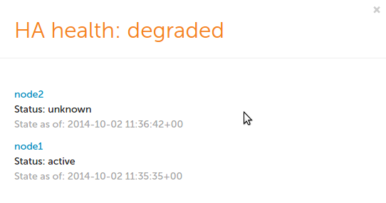
Inventory
There are also new Mission Portal inventory variables indicating the IP address of the active hub instance and status of High Availability installation on each of hubs. Looking at inventory reports is especially helpful to diagnose any problems when High Availability is reported as degraded.
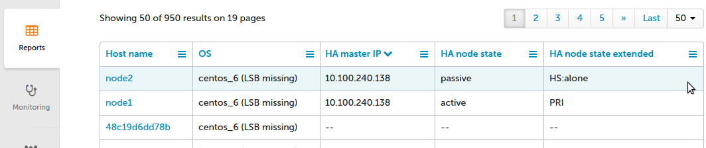
CFEngine High Availability installation
Existing CFEngine Enterprise installations can upgrade their single-node hub to a High Availability system in version 3.6.2. Detailed instruction how to upgrade from single hub to High Availability or how to install CFEngine High Availability from scratch can be found here.
Installation Guide
Overview
This is tutorial describing installation steps of CFEngine High Availability feature. It is suitable for both upgrading existing CFEngine installations to HA and for installing HA from scratch. Before starting installation we strongly recommend reading CFEngine High Availability overview. More detailed information can be found here.
Installation procedure
As with most High Availability systems, setting it up requires carefully following a series of steps with dependencies on network components. The setup can therefore be error-prone, so if you are a CFEngine Enterprise customer we recommend that you contact support for assistance if you do not feel 100% comfortable of doing this on your own.
Please also make sure you are having valid HA licenses for passive hub so that it will be able to handle all your CFEngine clients in case of failover.
Hardware configuration and OS pre-configuration steps
- CFEngine 3.6.2 hub package for RHEL6 or CentOS6.
- We recommend selecting dedicated interface used for PostgreSQL replication and optionally one for heartbeat.
- We recommend having one shared IP address assigned for interface where MP is accessible (optionally) and one where PostgreSQL replication is configured (mandatory).
- Both active and passive hub machines must be configured so that host names are different.
- Basic hostname resolution works (hub names can be placed in /etc/hosts or DNS configured).
Example configuration used in this tutorial
In this tutorial we are using following network configuration:
- Two nodes acting as active and passive where active node name is node1 and passive node name is node2.
- Each node having three NICs so that eth0 is used for heartbeat, eth1 is used for PostgreSQL replication and eth2 is used for MP and bootstrapping clients.
- IP addresses configured as follows:
| Node | eth0 | eth1 | eth2 |
|---|---|---|---|
| node1 | 192.168.0.10 | 192.168.10.10 | 192.168.100.10 |
| node2 | 192.168.0.11 | 192.168.10.11 | 192.168.100.11 |
| cluster shared | --- | 192.168.10.13 | 192.168.100.13 |
Detailed network configuration is shown on the picture below:

Installing cluster management tools
Before you begin you should have corosync (version 1.4.1 or higher) and pacemaker (version 1.1.10-14.el6_5.3 or higher) installed on both nodes. For your convenience we also recommend having crmsh installed. Detailed instructions how to install and set up all components are accessible here and here.
Once pacemaker and corosync are successfully installed on both nodes please follow steps below to set up it as needed by CFEngine High Availability.
IMPORTANT: please carefully follow the indicators describing if given step should be performed on active, passive or both nodes.
Configure corosync ( active and passive ):
echo "START=yes" > /etc/default/corosyncAdd pacemaker support ( active and passive ):
echo "service { # Load the Pacemaker Cluster Resource Manager ver: 1 name: pacemaker }" > /etc/corosync/service.d/pacemakerCreate corosync cluster configuration ( active and passive ):
cp /etc/corosync/corosync.conf.example /etc/corosync/corosync.conf- Find line with
bindnetaddr:and set to network address of interface used for cluster heartbeat (e.g.bindnetaddr: 192.168.1.0). - Configure
mcastaddr:andmcastport:if defaults are conflicting with other components placed in your network.
NOTE: If for some reason multicast is not supported by your network configuration (most times you need multicast broadcasting to be explicitly switched on) it is possible to use unicast configuration. For more details please refer corosync configuration guide.
Modify content of /usr/lib/ocf/resource.d/heartbeat/pgsql to contain CFEngine related configuration ( active and passive ):
# Defaults OCF_RESKEY_pgctl_default=/var/cfengine/bin/pg_ctl OCF_RESKEY_psql_default=/var/cfengine/bin/psql OCF_RESKEY_pgdata_default=/var/cfengine/state/pg/data OCF_RESKEY_pgdba_default=cfpostgres OCF_RESKEY_pghost_default="" OCF_RESKEY_pgport_default=5432 OCF_RESKEY_start_opt_default="" OCF_RESKEY_pgdb_default=template1 OCF_RESKEY_logfile_default=/dev/null OCF_RESKEY_stop_escalate_default=30 OCF_RESKEY_monitor_user_default="" OCF_RESKEY_monitor_password_default="" OCF_RESKEY_monitor_sql_default="select now();" OCF_RESKEY_check_wal_receiver_default="false" # Defaults for replication OCF_RESKEY_rep_mode_default=none OCF_RESKEY_node_list_default="" OCF_RESKEY_restore_command_default="" OCF_RESKEY_archive_cleanup_command_default="" OCF_RESKEY_recovery_end_command_default="" OCF_RESKEY_master_ip_default="" OCF_RESKEY_repuser_default="cfpostgres" OCF_RESKEY_primary_conninfo_opt_default="" OCF_RESKEY_restart_on_promote_default="false" OCF_RESKEY_tmpdir_default="/var/cfengine/state/pg/tmp" OCF_RESKEY_xlog_check_count_default="3" OCF_RESKEY_crm_attr_timeout_default="5" OCF_RESKEY_stop_escalate_in_slave_default=30Run corosyn and pacemaker to check if both cluster nodes are seen each other ( active and passive ):
/etc/init.d/corosync start /etc/init.d/pacemaker start crm_mon -Afr1As a result of running above command you should see output similar to one below:
Last updated: Wed Aug 20 15:47:47 2014 Stack: classic openais (with plugin) Current DC: node1 - partition with quorum Version: 1.1.10-14.el6_5.3-368c726 2 Nodes configured, 2 expected votes 4 Resources configured Online: [ node1 node2 ]Once corosync and pacemaker is running configure pacemaker to be able to manage PostgreSQL and needed shared IP addressees ( master only ):
property \ no-quorum-policy="ignore" \ stonith-enabled="false" \ crmd-transition-delay="0s" rsc_defaults \ resource-stickiness="INFINITY" \ migration-threshold="1" primitive ip-cluster ocf:heartbeat:IPaddr2 \ params \ ip="192.168.100.13" \ <<== modify this to be your shared cluster address (accessible by MP) nic="eth2" \ <<== modify this to be your interface where MP should be accessed cidr_netmask="24" \ <<== modify this if needed op start timeout="60s" interval="0s" on-fail="stop" \ op monitor timeout="60s" interval="10s" on-fail="restart" \ op stop timeout="60s" interval="0s" on-fail="block" primitive ip-rep ocf:heartbeat:IPaddr2 \ params \ ip="192.168.10.13" \ <<== modify this to be your shared address for PostgreSQL replication nic="eth1" \ <<== modify this to be interface PostgreSQL will use for replication cidr_netmask="24" \ <<== modify this if needed meta \ migration-threshold="0" \ op start timeout="60s" interval="0s" on-fail="restart" \ op monitor timeout="60s" interval="10s" on-fail="restart" \ op stop timeout="60s" interval="0s" on-fail="block" primitive pgsql ocf:heartbeat:pgsql \ params \ pgctl="/var/cfengine/bin/pg_ctl" \ psql="/var/cfengine/bin/psql" \ tmpdir="/var/cfengine/state/pg/tmp" \ pgdata="/var/cfengine/state/pg/data/" \ rep_mode="async" \ node_list="node1 node2" \ <<== modify this to point to host-names of MASTER and SLAVE respectivelly primary_conninfo_opt="keepalives_idle=60 keepalives_interval=5 keepalives_count=5" \ master_ip="192.168.10.13" \ <<== modify this to point to the shared address of PostgreSQL replication restart_on_promote="true" \ op start timeout="120s" interval="0s" on-fail="restart" \ op monitor timeout="60s" interval="4s" on-fail="restart" \ op monitor timeout="60s" interval="3s" on-fail="restart" role="Master" \ op promote timeout="120s" interval="0s" on-fail="restart" \ op demote timeout="120s" interval="0s" on-fail="stop" \ op stop timeout="120s" interval="0s" on-fail="block" \ op notify timeout="90s" interval="0s" ms pgsql-ms pgsql \ meta \ master-max="1" \ master-node-max="1" \ clone-max="2" \ clone-node-max="1" \ notify="true" group ip-group \ ip-cluster \ ip-rep colocation rsc_colocation-1 inf: ip-group pgsql-ms:Master order rsc_order-1 0: pgsql-ms:promote ip-group:start symmetrical=false order rsc_order-2 0: pgsql-ms:demote ip-group:stop symmetrical=falseTo apply above configuration create temporary file (*/tmp/cfengine.cib*) and run
crm configure < /tmp/cfengine.cib.Stop pacemaker and then corosync on both active and passive node.
NOTE: Don't worry if at this point you are seeing some pacemaker or corosync errors.
PostgreSQL configuration
Before starting this make sure that both corosync and pacemaker are not running.
- Install CFEngine hub package on both active and passive node.
- On active node bootstrap hub to itself to start acting as policy server (this step can be skipped if you are upgrading existing installation to High Availability).
- On passive node bootstrap it to active hub. While bootstrapping trust between both hubs will be established and keys will be exchanged.
After successful bootstrapping passive to active bootstrap passive to itself. From now on it will start operate as a hub so that it will be capable to collect reports and serve policy files. Please notice that while bootstrapping passive to itself you can see following message:
"R: This host assumes the role of policy server R: Updated local policy from policy server R: Failed to start the server R: Did not start the scheduler R: You are running a hard-coded failsafe. Please use the following command instead. "/var/cfengine/bin/cf-agent" -f /var/cfengine/inputs/update.cf 2014-09-29T17:36:24+0000 notice: Bootstrap to '10.100.100.116' completed successfully!"Configure PostgreSQL on active active node:
- Create two directories owned by PostgreSQL user: /var/cfengine/state/pg/data/pg_archive and /var/cfengine/state/pg/tmp
Modify postgresql.conf configuration file
echo "listen_addresses = '*' wal_level = hot_standby max_wal_senders=5 wal_keep_segments = 32 hot_standby = on restart_after_crash = off" >> /var/cfengine/state/pg/data/postgresql.confNOTE: In above configuration wal_keep_segments value specifies minimum number of segments (16 megabytes each) retained in PostgreSQL WAL logs directory in case a standby server needs to fetch them for streaming replication. It should be adjusted to number of clients handled by CFEngine hub and available disk space. Having installation with 1000 clients handled by CFEngine hub and assuming passive hub should be able to catch up with active one after 24 hours break, the value should be set close to 250 (4 GB of additional disk space).
Modify pg_hba.conf configuration file
echo "host replication all 192.168.10.10/32 trust host replication all 192.168.10.11/32 trust local replication all trust host replication all 127.0.0.1/32 trust host replication all ::1/128 trust " >> /var/cfengine/state/pg/data/pg_hba.confIMPORTANT: Above configuration allows accessing hub with cfpostgres user without any authentication from both cluster nodes. For security reasons we strongly advise to create replication user in PostgreSQL and protect access using password or certificate. What is more we advise using ssl-secured replication instead of described here unencrypted method.
Adding above changes needs PostgreSQL server to be restarted!
cd /tmp && su cfpostgres -c "/var/cfengine/bin/pg_ctl -w -D /var/cfengine/state/pg/data stop -m fast" cd /tmp && su cfpostgres -c "/var/cfengine/bin/pg_ctl -w -D /var/cfengine/state/pg/data -l /var/log/postgresql.log start"
Configure PostgreSQL on passive node:
- Remove PostgreSQL directory running following command
rm -rf /var/cfengine/state/pg/data/* - Do database backup running
su cfpostgres -c "cd /tmp && /var/cfengine/bin/pg_basebackup -h node1 -U cfpostgres -D /var/cfengine/state/pg/data -X stream -P Configure recovery.conf file indicating PostgreSQL running as hot-standby replica
echo "standby_mode = 'on' primary_conninfo = 'host=node1 port=5432 user=cfpostgres application_name=node2' " > /var/cfengine/state/pg/data/recovery.conf
NOTE: change host and application_name to point to host names of active and passive nodes respectively.
- Remove PostgreSQL directory running following command
Start PostgreSQL on passive hub using following command:
cd /tmp && su cfpostgres -c "/var/cfengine/bin/pg_ctl -w -D /var/cfengine/state/pg/data -l /var/log/postgresql.log start"
Verify PostgreSQL status on passive instance running echo "select pg_is_in_recovery();" | /var/cfengine/bin/psql cfdb.
Above should return t indicating that slave is working in recovery mode.
Verify if passive DB instance is connected to active running following command on active hub echo "select * from pg_stat_replication;" | /var/cfengine/bin/psql cfdb.
Above should return one entry indicating that host node1 is connected to database in streaming replication mode.
CFEngine configuration
Before starting this step make sure that PostgreSQL is running on both active and passive nodes and passive node is being replicated.
Create HA configuration file on both active and passive hubs like below:
echo "cmp_master: PRI cmp_slave: HS:async,HS:sync,HS:alone cmd: /usr/sbin/crm_attribute -l reboot -n pgsql-status -G -q" > /var/cfengine/ha.cfgCreate HA JSON configuration file as below:
echo "{ \"192.168.100.10\": { \"sha\": \"c14a17325b9a1bdb0417662806f579e4187247317a9e1739fce772992ee422f6\", \"internal_ip\": \"192.168.100.10\", \"tags\": [\"node1\"] }, \"192.168.100.11\": { \"sha\": \"b492eb4b59541c02a13bd52efe17c6a720e8a43b7c8f8803f3fc85dee7951e4f\", \"internal_ip\": \"192.168.100.11\", \"tags\": [\"node2\"] } }" > /var/cfengine/masterfiles/cfe_internal/ha/ha_info.jsonThe
internal_ipattribute is the IP address of the hub (the one you used to bootstrapped itself to) andshais the key of the hub. Theshakey can be found by runningcf-key -sthe on the respective hub and match that to theinternal_ip.Modify /var/cfengine/masterfiles/def.cf and enable HA by uncommenting
"enable_cfengine_enterprise_hub_ha" expression => "enterprise_edition";line (make sure to comment or remove line"enable_cfengine_enterprise_hub_ha" expression => "!any";).Run update.cf to make sure that new policy is copied from masterfiles to inputs
cf-agent -f update.cfon active first and then on passive.Start corosync and pacemaker on active node first. Make sure that PostgreSQL is running and managed by corosync/pacemaker. Verify the status using following commend
crm_mon -Afr1You should see something similar to one below:Last updated: Wed Aug 20 15:54:32 2014 Last change: Wed Aug 20 15:54:09 2014 via crm_attribute on node1 Stack: classic openais (with plugin) Current DC: node1 - partition WITHOUT quorum Version: 1.1.10-14.el6_5.3-368c726 2 Nodes configured, 2 expected votes 4 Resources configured Online: [ node1 ] OFFLINE: [ node2 ] Full list of resources: Master/Slave Set: pgsql-ms [pgsql] Stopped: [ node1 node2 ] Resource Group: ip-group ip-cluster (ocf::heartbeat:IPaddr2): Stopped ip-rep (ocf::heartbeat:IPaddr2): Stopped Node Attributes: * Node node1: + master-pgsql : -INFINITY + pgsql-data-status : LATEST + pgsql-status : STOP Migration summary: * Node node1: pgsql: migration-threshold=1 fail-count=2 last-failure='Wed Aug 20 15:54:12 2014' Failed actions: pgsql_monitor_4000 on node1 'not running' (7): call=28, status=complete, last-rc-change='Wed Aug 20 15:54:12 2014', queued=300ms, exec=1msBy default after starting corosync it will stop PostgreSQL as there is no connection with second node. pgsql-status should be STOP and PostgreSQL should not run. If this is the case repair PostgreSQL resource using
crm resource cleanup pgsql. After this runcrm_mon -Afr1again and wait until pgsql-status is reported as PRI.Start corosync on SLAVE node. After this second node should immediately be reported as passive and you should see output of
crm_mon -Afr1similar to one below:Last updated: Wed Aug 20 15:47:47 2014 Last change: Wed Aug 20 15:57:56 2014 via crm_attribute on node1 Stack: classic openais (with plugin) Current DC: node1 - partition with quorum Version: 1.1.10-14.el6_5.3-368c726 2 Nodes configured, 2 expected votes 4 Resources configured Online: [ node1 node2 ] Full list of resources: Master/Slave Set: pgsql-ms [pgsql] Masters: [ node1 ] Slaves: [ node2 ] Resource Group: ip-group ip-cluster (ocf::heartbeat:IPaddr2): Started node1 ip-rep (ocf::heartbeat:IPaddr2): Started node1 Node Attributes: * Node node1: + master-pgsql : 1000 + pgsql-data-status : LATEST + pgsql-master-baseline : 0000000006000090 + pgsql-status : PRI * Node node2: + master-pgsql : 1000 + pgsql-data-status : STREAMING|ASYNC + pgsql-status : HS:alone + pgsql-xlog-loc : 00000000060000F8 Migration summary: * Node node1: * Node node2:IMPORTANT: Please make sure that pgsql-status for the active node is reported as PRI and passive as HS:alone or HS:async.
Enjoy your working CFEngine High Availability setup!
Install and Get Started
Installation
The General Installation instructions provide the detailed steps for installing CFEngine, which are generally the same steps to follow for CFEngine Enterprise, with the exception of license keys (if applicable), and also some aspects of post-installation and configuration.
Installing Enterprise Licenses
Before you begin, you should have your license key, unless you only plan to use the free 25 node license. The installation instructions will be provided with the key.
Post-Install Configuration
Change Email Setup After CFEngine Enterprise Installation
For Enterprise 3.6 local mail relay is used, and it is assumed the server has a proper mail setup.
The default FROM email for all emails sent from the Mission Portal is admin@organization.com. This can be changed on the CFE Server in /var/cfengine/httpd/htdocs/application/config/appsettings.php:$config['appemail'].
Version your policies
Consider enabling the built-in version control of your policies as described in Version Control and Configuration Policy
Whether you do or not, please put your policies in some kind of
backed-up VCS. Losing work because of "fat fingering" rm commands is
very, very depressing.
Review settings
See The Policy Framework for a full list of all the settings you can configure.
User Interface
The challenge in engineering IT infrastructure, especially as it scales vertically and horizontally, is to recognize the system components, what they do at any given moment in time (or over time), and when and how they change state.
CFEngine Enterprise's data collection service, the cf-hub collector, collects, organizes, and stores data from every host. The data is stored primarily in a PostgreSQL database.
CFEngine Enterprise's user interface, the Mission Portal makes that data available for high level reports or alerts and notifications. The reports can be designed in a GUI report builder or directly with SQL statements passed to PostgreSQL.

The Mission Portal also allows authorized infrastructure engineers to quickly and easily modify any group of machines through the Design Center toolchain, which uses a data-driven policy template mechanism called sketches.
Hosts and Health
CFEngine collects data on promise compliance, and sorts hosts according to 3 different categories: erroneous, fully compliant, and lacking data.
Find out more: Hosts and Health
Alerts and Notifications
The dashboard contains informative widgets that you can customize to create alerts. All notifications of alert state changes, e.g. from OK to not-OK, are stored in an event log for later inspection and analysis.

Alerts can have three different severity level: low, medium and high. These are represented by yellow, orange and red rings respectively, along with the percentage of hosts alerts have triggered on. Hovering over the widget will show the information as text in a convenient list format.

You can pause alerts during maintenance windows or while working on resolving an underlying issue to avoid unnecessary triggering and notifications.

Alerts can have three different states: OK, triggered, and paused. It is easy to filter by state on each widget's alert overview.
Find out more: Alerts and Notifications
Reporting
Inventory reports allow for quick reporting on out-of-the-box attributes. The attributes are also extensible, by tagging any CFEngine variable or class, such as the role of the host, inside your CFEngine policy. These custom attributes will be automatically added to the Mission Portal.

You can reduce the amount of data or find specific information by filtering on attributes and host groups. Filtering is independent from the data presented in the results table: you can filter on attributes without them being presented in the table of results.

Add and remove columns from the results table in real time, and once you're happy with your report, save it, export it, or schedule it to be sent by email regularly.

Find out more: Reporting
Find out more about writing your own inventory modules: Inventory modules
Monitoring
Monitoring allows you to get an overview of your hosts over time.
Find out more: Monitoring
Design Center UI
The Design Center UI allows authorized infrastructure engineers to configure, deploy, and monitor data-driven policy templates known as sketches.
Find out more: Design Center
Settings
A variety of CFEngine and system properties can be changed in the Settings view.
Find out more: Settings
Settings
A variety of CFEngine and system properties can be changed in the Settings view.
- Opening Settings
- Preferences
- User Management
- Manage Apps
- Version Control Repository
- Host Identifier
- About CFEngine
Opening Settings

Settings are accessible from any view of the mission portal, from the drop down in the top right hand corner.
Preferences

User settings and preferences allows the CFEngine Enterprise administrator to change various options, including:
- User authentication
- Turn on or off RBAC
- Log level
- Customize the user experience with the organization logo
User Management

User management is for adding or adjusting CFEngine Enterprise UI users, including their name, role, and password.
Manage Apps

Application settings can help adjust some of CFEngine Enterprise UI app features, including the order in which the apps appear and their status (on or off).
Version Control Repository

The repository holding the organization's masterfiles can be adjusted on the Version Control Repository screen.
Host Identifier

Host identity for the server can be set within settings, and can be adjusted to refer to the FQDN, IP address, or an unqualified domain name.
About CFEngine

The About CFEngine screen contains important information about the specific version of CFEngine being used, license information, and more.
Hosts and Health
Host Compliance
CFEngine collects data on promise compliance. Each host is in one of two groups: out of compliance or fully compliant.
- A host is considered out of compliance if less than 100% of its promises were kept.
- A host is considered fully compliant if 100% of its promises were kept.
You can look at a specific sub-set of your hosts by selecting a category from the menu on the left.
Host Info
Here you will find extensive information on single hosts that CFEngine detects automatically in your environment. Since this is data gathered per host, you need to select a single host from the menu on the left first.
Host Health
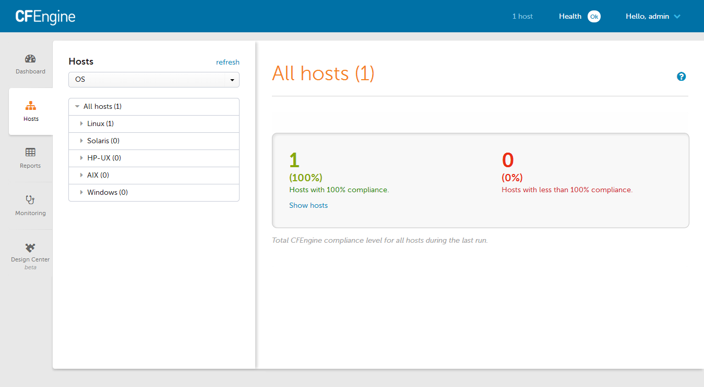
You can get quick access to the health of hosts, including direct links to reports, from the Health drop down at the top of every Enterprise UI screen. Hosts are listed as unhealthy if:
- the hub was not able to connect to and collect data from the host within a set time interval (unreachable host). The time interval can be set in the Mission Portal settings.
- the policy did not get executed for the last three runs. This could be caused by
cf-execdnot running on the host (scheduling deviation) or an error in policy that stops its execution. The hub is still able to contact the host, but it will return stale data because of this deviation.
In either situation the data from that host will be from old runs and probably not reflect the current state of that host.
Alerts and Notifications
Create a New Alert
From the Dashboard, locate the rectangle with the dotted border.
When the cursor is hovering over top, an Add button will appear.
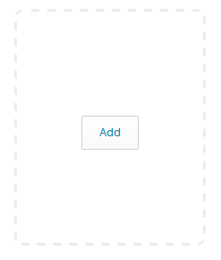
- Click the button to begin creating the alert.
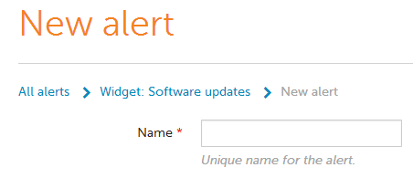
Add a unique name for the alert.
Each alert has a visual indication of its severity, represented by one of the following colors:
- Low: Yellow
- Medium: Orange
- High: Red
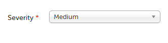
From the Severity dropdown box, select one of the three options available.
The Select Condition drop down box represents an inventory of existing conditional rules, as well as an option to create a new one
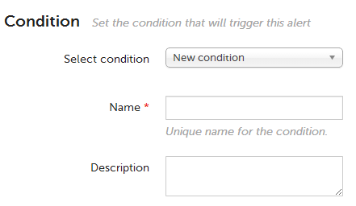
When selecting an existing conditional rule, the name of the condition will automatically populate the mandatory condition Name field.
When creating a new condition the Namefield must be filled in.

Each alert also has a Condition type:
- Policy conditions trigger alerts based on CFEngine policy compliance status. They can be set on bundles, promisees, and promises. If nothing is specified, they will trigger alerts for all policy.
- Inventory conditions trigger alerts for inventory attributes. These attributes correspond to the ones found in inventory reports.
- Sketch conditions trigger alerts based on the compliance status of the part of CFEngine policy which has been added by a specific sketch during its activation.
- Software Updates conditions trigger alerts based on packages available for update in the repository. They can be set either for a specific version or trigger on the latest version available. If neither a package nor a version is specified, they will trigger alerts for any update.
It is possible to create alerts for all hosts, or a filtered set of hosts.
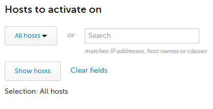
- Notification by email is also an option for a given alert.
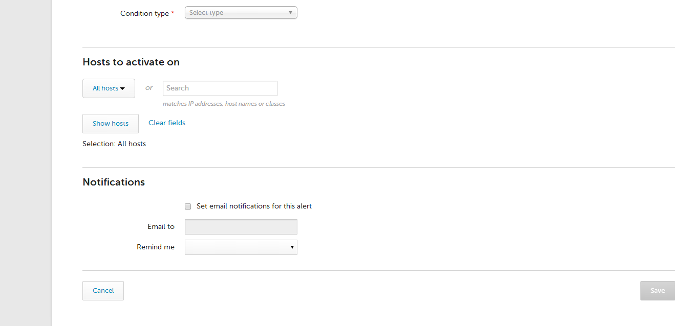
Check the Set email notifications for this alert box to activate the field for entering the email address to notify. At the present time only one email address can be entered into the field.
The Remind me dropdown box provides a selection of intervals to send reminder emails for triggered events.
Custom actions for Alerts
Once you have become familiar with the Alerts and Notifications, you might see the need to integrate the alerts with an existing system like Nagios, instead of relying on emails for getting notified.
This is where the Custom actions come in. A Custom action is a way to execute a script on the hub whenever an alert is triggered or cleared, as well as when a reminder happens (if set). The script will receive a set of parameters containing the state of the alert, and can do practically anything with this information. Typically, it is used to integrate with other alerting or monitoring systems like PagerDuty or Nagios.
Any scripting language may be used, as long as the hub has an interpreter for it.
Alert parameters
The Custom action script gets called with one parameter: the path to a file with a set of KEY=VALUE lines. Most of the keys are common for all alerts, but some additional keys are defined based on the alert type, as shown below.
Common keys
These keys are present for all alert types.
| Key | Description |
|---|---|
| ALERT_ID | Unique ID (number). |
| ALERT_NAME | Name, as defined in when creating the alert (string). |
| ALERT_SEVERITY | Severity, as selected when creating the alert (string). |
| ALERT_LAST_CHECK | Last time alert state was checked (Unix epoch timestamp). |
| ALERT_LAST_EVENT_TIME | Last time the alert created an event log entry (Unix epoch timestamp). |
| ALERT_LAST_STATUS_CHANGE | Last time alert changed from triggered to cleared or the other way around (Unix epoch timestamp). |
| ALERT_STATUS | Current status, either 'fail' (triggered) or 'success' (cleared). |
| ALERT_FAILED_HOST | Number of hosts currently triggered on (number). |
| ALERT_TOTAL_HOST | Number of hosts defined for (number). |
| ALERT_CONDITION_NAME | Condition name, as defined when creating the alert (string). |
| ALERT_CONDITION_DESCRIPTION | Condition description, as defined when creating the alert (string). |
| ALERT_CONDITION_TYPE | Type, as selected when creating the alert. Can be 'policy', 'inventory', 'softwareupdate' or 'sketch'. |
Policy keys
In addition to the common keys, the following keys are present when ALERT_CONDITION_TYPE='policy'.
| Key | Description |
|---|---|
| ALERT_POLICY_CONDITION_FILTERBY | Policy object to filter by, as selected when creating the alert. Can be 'bundlename', 'promiser' or 'promisees'. |
| ALERT_POLICY_CONDITION_FILTERITEMNAME | Name of the policy object to filter by, as defined when creating the alert (string). |
| ALERT_POLICY_CONDITION_PROMISEHANDLE | Promise handle to filter by, as defined when creating the alert (string). |
| ALERT_POLICY_CONDITION_PROMISEOUTCOME | Promise outcome to filter by, as selected when creating the alert. Can be either 'KEPT', 'REPAIRED' or 'NOTKEPT'. |
Inventory keys
In addition to the common keys, the following keys are present when ALERT_CONDITION_TYPE='inventory'.
| Key | Description |
|---|---|
| ALERT_INVENTORY_CONDITION_FILTER_$(ATTRIBUTE_NAME) | The name of the attribute as selected when creating the alert is part of the key (expanded), while the value set when creating is the value (e.g. ALERT_INVENTORY_CONDITION_FILTER_ARCHITECTURE='x86_64'). |
| ALERT_INVENTORY_CONDITION_FILTER_$(ATTRIBUTE_NAME)_CONDITION | The name of the attribute as selected when creating the alert is part of the key (expanded), while the value is the comparison operator selected. Can be 'ILIKE' (matches), 'NOT ILIKE' (doesn't match), '=' (is), '!=' (is not), '<', '>'. |
| ... | There will be pairs of key=value for each attribute name defined in the alert. |
Software updates keys
In addition to the common keys, the following keys are present when ALERT_CONDITION_TYPE='softwareupdate'.
| Key | Description |
|---|---|
| ALERT_SOFTWARE_UPDATE_CONDITION_PATCHNAME | The name of the package, as defined when creating the alert, or empty if undefined (string). |
| ALERT_SOFTWARE_UPDATE_CONDITION_PATCHARCHITECTURE | The architecture of the package, as defined when creating the alert, or empty if undefined (string). |
Sketch keys
In addition to the common keys, the following keys are present when ALERT_CONDITION_TYPE='sketch'.
| Key | Description |
|---|---|
| ALERT_SKETCH_CONDITION_SKETCHNAME | The name of the sketch, e.g. 'Security::file_integrity' (string). |
| ALERT_SKETCH_CONDITION_ACTIVATIONNAME | The name of the sketch activation, as typed by the user activating the sketch (string). |
| ALERT_SKETCH_CONDITION_ACTIVATIONHASH | A unique ID for this sketch activation (string). |
| ALERT_SKETCH_CONDITION_SKETCHCHECKTYPE | The type, or category, of the sketch, e.g. 'compliance' (string). |
Example parameters: policy bundle alert not kept
Given an alert that triggers on a policy bundle being not kept (failed), the following is example content of the file being provided as an argument to a Custom action script.
ALERT_ID='6'
ALERT_NAME='Web service'
ALERT_SEVERITY='high'
ALERT_LAST_CHECK='0'
ALERT_LAST_EVENT_TIME='0'
ALERT_LAST_STATUS_CHANGE='0'
ALERT_STATUS='fail'
ALERT_FAILED_HOST='49'
ALERT_TOTAL_HOST='275'
ALERT_CONDITION_NAME='Web service'
ALERT_CONDITION_DESCRIPTION='Ensure web service is running and configured correctly.'
ALERT_CONDITION_TYPE='policy'
ALERT_POLICY_CONDITION_FILTERBY='bundlename'
ALERT_POLICY_CONDITION_FILTERITEMNAME='web_service'
ALERT_POLICY_CONDITION_PROMISEOUTCOME='NOTKEPT'
Saving this as a file, e.g. 'alert_parameters_test', can be useful while writing and testing your Custom action script. You could then simply test your Custom action script, e.g. 'cfengine_custom_action_ticketing.py', by running
./cfengine_custom_action_ticketing alert_parameters_test
When you get this to work as expected on the commmand line, you are ready to upload the script to the Mission Portal, as outlined below.
Example script: logging policy alert to syslog
The following Custom action script will log the status and definition of a policy alert to syslog.
#!/bin/bash
source $1
if [ "$ALERT_CONDITION_TYPE" != "policy" ]; then
logger -i "error: CFEngine Custom action script $0 triggered by non-policy alert type"
exit 1
fi
logger -i "Policy alert '$ALERT_NAME' $ALERT_STATUS. Now triggered on $ALERT_FAILED_HOST hosts. Defined with $ALERT_POLICY_CONDITION_FILTERBY='$ALERT_POLICY_CONDITION_FILTERITEMNAME', promise handle '$ALERT_POLICY_CONDITION_PROMISEHANDLE' and outcome $ALERT_POLICY_CONDITION_PROMISEOUTCOME"
exit $?
What gets logged to syslog depends on which alert is associated with the script, but an example log-line is as follows:
Sep 26 02:00:53 localhost user[18823]: Policy alert 'Web service' fail. Now triggered on 11 hosts. Defined with bundlename='web_service', promise handle '' and outcome NOTKEPT
Uploading the script to the Mission Portal
Members of the admin role can manage Custom action scripts in the Mission Portal settings.
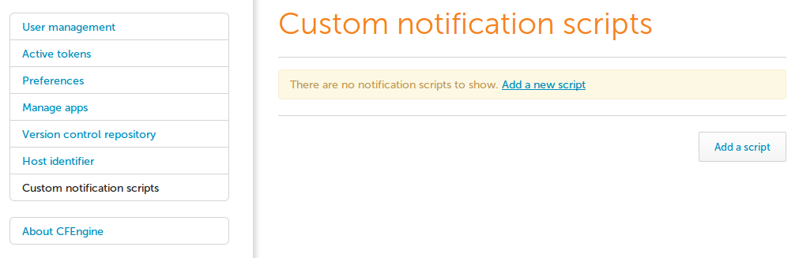
A new script can be uploaded, together with a name and description, which will be shown when creating the alerts.

Associating a Custom action with an alert
Alerts can have any number of Custom action scripts as well as an email notification associated with them. This can be configured during alert creation. Note that for security reasons, only members of the admin role may associate alerts with Custom action scripts.

Conversely, several alerts may be associated with the same Custom action script.
When the alert changes state from triggered to cleared, or the other way around, the script will run. The script will also run if the alert remains in triggered state and there are reminders set for the alert notifications.
Reporting UI
CFEngine collects a large amount of data. To inspect it, you can run and schedule pre-defined reports or use the query builder for your own custom reports. You can save these queries for later use, and schedule reports for specified times.
If you are familiar with SQL syntax, you can input your query into the interface directly. Make sure to take a look at the database schema. Please note: manual entries in the query field at the bottom of the query builder will invalidate all field selections and filters above, and vice-versa.
You can query fewer hosts with the help of filters above the displayed table. These filters are based on the same categorization you can find in the other apps.
You can also filter on the type of promise: user defined, system defined, or all.
See also:
Query Builder
Users not familiar with SQL syntax can easily create their own custom reports in this interface.
- Tables - Select the data tables you want include in your report first.
- Fields - Define your table columns based on your selection above.
- Filters - Filter your results. Remember that unless you filter, you may be querying large data sets, so think about what you absolutely need in your report.
- Group - Group your results. May be expensive with large data sets.
- Sort - Sort your results. May be expensive with large data sets.
- Limit - Limit the number of entries in your report. This is a recommended practice for testing your query, and even in production it may be helpful if you don't need to see every entry.
- Show me the query - View and edit the SQL query directly. Please note, that editing the query directly here will invalidate your choices in the query builder interface, and changing your selections there will override your SQL query.
Ensure the report collection is working
The reporting bundle must be called from
promises.cf. For example, the following defines the attributeRolewhich is set todatabase_server. You need to add it to the top-levelbundlesequenceinpromises.cfor in a bundle that it calls.bundle agent myreport { vars: "myrole" string => "database_server", meta => { "inventory", "attribute_name=Role" }; }note the
metataginventoryThe hub must be able to collect the reports from the client. TCP port 5308 must be open and, because 3.6 uses TLS, should not be proxied or otherwise intercepted. Note that bootstrapping and other standalone client operations go from the client to the server, so the ability to bootstrap and copy policies from the server doesn't necessarily mean the reverse connection will work.
Ensure that variables and classes tagged as
inventoryorreportare not filtered bycontrols/cf_serverd.cfin your infrastructure. The standard configuration from the stock CFEngine packages allows them and should work.
Note: The CFEngine report collection model accounts for long periods of time when the hub is unable to collect data from remote agents. This model preserves data recorded until it can be collected. Data (promise outcomes, etc ...) recorded by the agent during normal agent runs is stored locally until it is collected from by the cf-hub process. At the time of collection the local data stored on the client is cleaned up and only the last hours worth of data remains client. It is important to understand that the time between hub collection and number of clients that are unable to be collected from grows the amount of data to transfer and store in the central database also grows. A large number of clinets that have not been collected from that become available at once can cause increased load on the hub collector and affect its performance until it has been able to collect from all hosts.
Define a New Single Table Report
- In Mission Portal select the Report application icon on the left hand side of the screen.
- This will bring you to the Report builder screen.
- The default for what hosts to report on is All hosts. The hosts can be filtered under the Filters section at the top of the page.
- For this tutorial leave it as All hosts.
- Set which tables' data we want reports for.
- For this tutorial select Hosts.
- Select the columns from the Hosts table for the report.
- For this tutorial click the Select all link below the column lables.
- Leave Filters, Sort, and Limit at the default settings.
- Click the orange Run button in the bottom right hand corner.
Check Report Results
- The report generated will show each of the selected columns across the report table's header row.
- In this tutorial the columns being reported back should be: Host key, Last report time, Host name, IP address, First report-time.
- Each row will contain the information for an individual data record, in this case one row for each host.
- Some of the cells in the report may provide links to drill down into more detailed information (e.g. Host name will provide a link to a Host information page).
- It is possible to also export the report to a file.
- Click the orange Export button.
- You will then see a Report Download dialog.
- Report type can be either csv or pdf format.
- Leave other fields at the default values.
- If the server's mail configuration is working properly, it is possible to email the report by checking the Send in email box.
- Click OK to download or email the csv or pdf version of the report.
- Once the report is generated it will be available for download or will be emailed.
Inventory Management
Inventory allows you to define the set of hosts to report on.
The main Inventory screen shows the current set of hosts, together with relevant information such as operating system type, kernel and memory size.
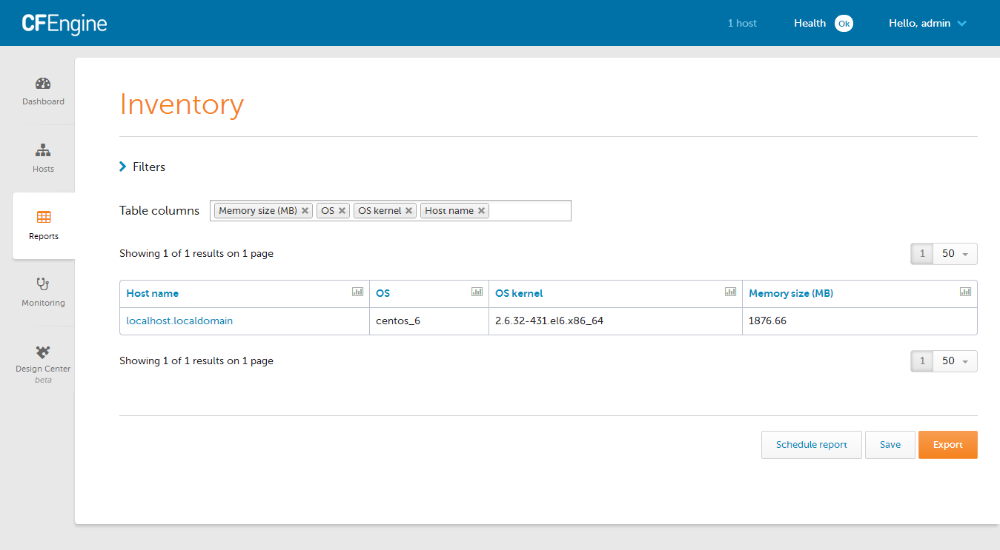
To begin filtering, one would first select the Filters drop down, and then select an attribute to filter on (e.g. OS type = linux)

After applying the filter, it may be convenient to add the attribute as one of the table columns.
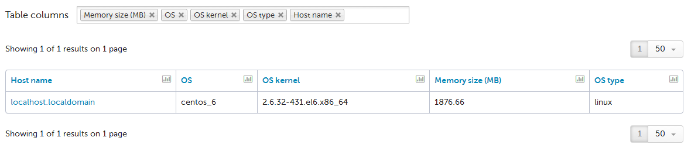
Changing the filter, or adding additional attributes for filtering, is just as easy.

We can see here that there are no Windows machines bootstrapped to this hub.
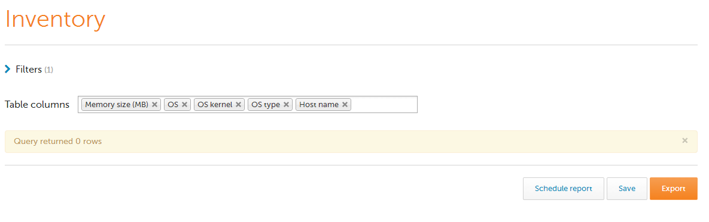
Reporting Architecture
The reporting architecture of CFEngine Enterprise uses two software components from the CFEngine Enterprise hub package.
cf-hub
Like all CFEngine components, cf-hub is
located in /var/cfengine/bin. It is a daemon process that runs in the
background, and is started by cf-agent and from the init scripts.
cf-hub wakes up every 5 minutes and connects to the cf-serverd of
each host to download new data.
To collect reports from any host manually, run the following:
$ /var/cfengine/bin/cf-hub -H <host IP>
Add
-vto run in verbose mode to diagnose connectivity issues and trace the data collected.Delta (differential) reporting, the default mode, collects data that has changed since the last collection. Rebase (full) reports collect everything. You can choose the full collection by adding
-q rebase(for backwards comapatibility, also available as-q full).
Apache
REST over HTTP is provided by the
Apache http server which also hosts the
Mission Portal. The httpd process is started through CFEngine policy
and the init scripts and listens on ports 80 and 443 (HTTP and HTTP/S).
Apache is part of the CFEngine Enterprise installation in
/var/cfengine/httpd. A local cfapache user is created with
privileges to run cf-runagent.
SQL Queries Using the Enterprise API
The CFEngine Enterprise Hub collects information about the environment in a centralized database. Data is collected every 5 minutes from all bootstrapped hosts. This data can be accessed through the Enterprise Reporting API.
Through the API, you can run CFEngine Enterprise reports with SQL queries. The API can create the following report queries:
- Synchronous query: Issue a query and wait for the table to be sent back with the response.
- Asynchronous query: A query is issued and an immediate response with an ID is sent so that you can check the query later to download the report.
- Subscribed query: Specify a query to be run on a schedule and have the result emailed to someone.
Synchronous Queries
Issuing a synchronous query is the most straightforward way of running an SQL query. We simply issue the query and wait for a result to come back.
Request:
curl -k --user admin:admin https://test.cfengine.com/api/query -X POST -d
{
"query": "SELECT ..."
}
Response:
{
"meta": {
"page": 1,
"count": 1,
"total": 1,
"timestamp": 1351003514
},
"data": [
{
"query": "SELECT ...",
"header": [
"Column 1",
"Column 2"
],
"rowCount": 3,
"rows": [
]
"cached": false,
"sortDescending": false
}
]
}
Asynchronous Queries
Because some queries can take some time to compute, you can fire off a query and check the status of it later. This is useful for dumping a lot of data into CSV files for example. The sequence consists of three steps:
- Issue the asynchronous query and get a job id.
- Check the processing status using the id.
- When the query is completed, get a download link using the id.
Issuing the query
Request:
curl -k --user admin:admin https://test.cfengine.com/api/query/async -X POST -d
{
"query": "SELECT Hosts.HostName, Hosts.IPAddress FROM Hosts JOIN Contexts ON Hosts.Hostkey = Contexts.HostKey WHERE Contexts.ContextName = 'ubuntu'"
}
Response:
{
"meta": {
"page": 1,
"count": 1,
"total": 1,
"timestamp": 1351003514
},
"data": [
{
"id": "32ecb0a73e735477cc9b1ea8641e5552",
"query": "SELECT ..."
}
]
]
Checking the status
Request:
curl -k --user admin:admin https://test.cfengine.com/api/query/async/:id
Response:
{
"meta": {
"page": 1,
"count": 1,
"total": 1,
"timestamp": 1351003514
},
"data": [
{
"id": "32ecb0a73e735477cc9b1ea8641e5552",
"percentageComplete": 42,
]
}
Getting the completed report
This is the same API call as checking the status. Eventually, the percentageComplete field will reach 100 and a link to the completed report will be available for downloading.
Request:
curl -k --user admin:admin https://test.cfengine.com/api/query/async/:id
Response:
{
"meta": {
"page": 1,
"count": 1,
"total": 1,
"timestamp": 1351003514
},
"data": [
{
"id": "32ecb0a73e735477cc9b1ea8641e5552",
"percentageComplete": 100,
"href": "https://test.cfengine.com/api/static/32ecb0a73e735477cc9b1ea8641e5552.csv"
}
]
}
Subscribed Queries
Subscribed queries happen in the context of a user. Any user can create a query on a schedule and have it emailed to someone.
Request:
curl -k --user admin:admin https://test.cfengine.com/api/user/name/
subscription/query/file-changes-report -X PUT -d
{
"to": "email@domain.com",
"query": "SELECT ...",
"schedule": "Monday.Hr23.Min59",
"title": "Report title"
"description": "Text that will be included in email"
"outputTypes": [ "pdf" ]
}
Response:
204 No Content
Monitoring
Monitoring allows you to get an overview of your hosts over time.
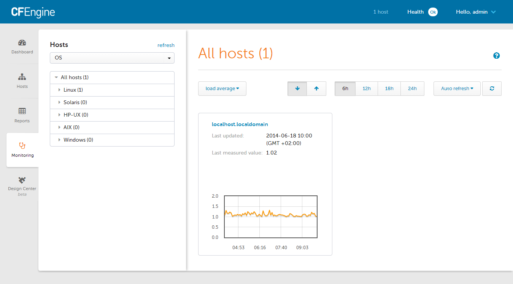
If multiple hosts are selected in the menu on the left, then you can select one of three key measurements that is then displayed for all hosts:
- load average
- Disk free (in %)
- CPU(ALL) (in %)
You can reduce the number of graphs by selecting a sub-set of hosts from the menu on the left. If only a
single host is selected, then a number of graphs for various measurements will be displayed for this host. Which exact measurements are reported depends on how cf-monitord is configured and extended via measurements promises.
Clicking on an individual graph allows to select different time spans for which monitoring data will be displayed.
If you don't see any data, make sure that:
cf-monitordis running on your hosts. This is configurable through the listsagents_to_be_enabledandagents_to_be_disabledinmasterfiles/update/update_processes.cf.cf-hubhas access to collecting the monitoring data from your hosts. This is configurable through the attributes inreport_data_selectinmasterfiles/controls/cf_serverd.cf.
Design Center UI
The Design Center UI allows authorized infrastructure engineers to configure, deploy, and monitor data-driven policy templates known as sketches. The engineer can target any group of hosts using pre-existing or custom classifications.
Delegation of System Administrator Tasks
CFEngine experts can write their own sketches to address their exact needs. They can be hosted in a private Design Center repository so that other administrators, developers and line-of-business users can again configure, deploy, and monitor them without detailed CFEngine knowledge.
For more information, see Write a new Sketch
Version Control for Sketches
CFEngine Enterprise keeps track of sketch deployments, using Git integration to track authors, source-code and meta-information about policy deployments.
CFEngine, Design Center and Version Control Systems
In CFEngine Enterprise, the Design Center is enabled through a Git
repository integration. Out of the box, the software uses a "bare"
Git repository in /opt/cfengine/masterfiles.git but does not
deploy it automatically. Thus any work you do with Design Center will
not propagate to your hosts without some help.
Please see Version Control and Configuration Policy for detailed instructions for enabling the Version Control workflow in CFEngine Enterprise.
Sketches in the Design Center App
The CFEngine Design Center includes a number of data-driven policy templates called sketches that let you configure and deploy CFEngine policies without requiring detailed knowledge of the CFEngine language. You can select sketches from a categorized list and configure them in the interface, then apply them to any group of hosts.
Every organization using CFEngine can add their own custom sketches which will consequently be shown in the app's list of sketches.
Note: The Mission Portal's Design Center App requires a dedicated Git repository. If you have admin rights to the Mission Portal, you can configure it in the Settings panel. Furthemore you have to enable the Git repository integration as explained above.
Configuration
After selecting a sketch, you need to configure it (*activate it*). First, give your activation parameters a unique name so you can recognize it later. Then fill in the fields below (some will be optional, others mandatory). All of them show examples and a descriptive text.
You also need to define the hosts you want to target. You can select host categories through the drop-down menus. These categories are based on categorizations defined in the Hosts App for example. You can select individual hosts too.
Activation
When you're done configuring your sketch you need to activate it. This will require a commit to your configured Git repository that transforms your configuration parameters into CFEngine policy. You will then be able to follow the state of your activation (*In Progress*, OK, and Failed) and report on any problems.
Note: Sketches can be activated multiple times with different configurations and sets of hosts. The Design Center UI will show you each activation, its status, the hosts it targets, and the parameters specified.
See Also
- Enterprise Sketches
- Write a new Sketch
- Deploy your first Policy (Enterprise)
- Version Control and Configuration Policy (Enterprise)
- Write a new Sketch
Deploy your first Policy
Enterprise Users can Deploy Policies through the Design Center App
Note: This tutorial walks you through configuring and deploying ("activating") a sketch to make it part of your site policy. You must be an authenticated Enterprise user who has authorized access to the CFEngine Mission Portal console. CFEngine must be up and running in order to complete this tutorial.
Overview
A sketch defines data-driven configurable and reusable policy. You can use sketches to implement, activate, or enforce policy. Sketches are written in the CFEngine policy language; you can use them simply by installing them, configuring them using the appropriate parameters and environments, and then deploying them on your infrastructure ("activating" them).
In this tutorial, we want to implement the following policy:
The iscsi-initatior-utils software package must be present/installed on all hosts.
Since CFEngine includes a sketch (the Packages sketch) that can generate this policy, we do not do not need to write a policy. Instead, we can use the Packages sketch to deploy our policy. (Note that you may use an alternate package from your system's package repository if necessary.)
Configure and deploy a policy using sketches
We will activate the Packages sketch which allows you to install selected software packages on specific hosts. A sketch must include a parameter set and an environment(s), both of which we will set in the example below. Make certain that the packages you select are included in the package repository. (The package in our example below is available in the CentOS package repository. You can select any package that is available through your operating system's package repository.)
Log in to the Mission Portal. Select Design Center from the left sidebar.
Select the Packages::installed sketch. Use the following values:
a. Descriptive name: Enter Install iSCSI. This allows you to recognize the activation (and its goal) later, as the Design Center uses this name when it commits changes to Git.
b. Packages that should be installed: Fill in the name of the package that must be installed. For this example, use iscsi-initiator-utils. This is the parameter set.
c. Hosts to activate on: Click Select category to display host options. Select All hosts for our example. All host names appear. This is the environment in which the sketch must be activate.
Here is an example:

Click Activate. This deploys the sketch to all hosts.
Enter a description in the Commit your changes window that appears. The Design Center uses this comment for version control when it commits changes to Git. Click Commit to complete the change.
When a sketch is activated, the following occurs:
The policy that is generated when the sketch is activated gets committed to your Git repository. This allows you to keep track of who has made what changes, and when, and why.
The policy server is typically configured to check the Git repository every five minutes to ensure that it is running the latest version of available policies. This process can be handled manually as well.
The hosts check with the policy server for updated policy. They also work on default intervals of five minutes.
The policy server collects information from the agents on the hosts to obtain insight into the progress with executing the sketch. The information it collects is used to update the information in the Design Center.
In total, this process might take a few minutes to converge to the correct state for all hosts. The process is designed to be scalable: even though it takes a few minutes for the two servers in this example to be updated, it does not take much longer to update 2,000 servers. If you check back with the Packages sketch in the middle of the activation process, you will see a message that reads Status: Being Activated. Upon successful completion, the window should look like this:

Now that the sketch is deployed, CFEngine continuously verifies that it is maintained. It checks 365 days per year, 24 hours per day, 12 times per hour to make certain this package is on all of the hosts. If the package is removed, it is added within five minutes, and CFEngine creates reports that it made a repair. Thus, the state of the overall system is known and stable and system drift is avoided. This works for 2, 200, or 20,000 servers.
Enterprise Sketches
Getting Started Topics
Integrating the Mission Portal with git The Design Center App requires access to a Git repository in order to manage sketches. This section describes how to set up the Git repository and how to connect the Mission Portal to it. (The Design Center App is located on the Mission Portal console.) Instructions for testing the Design Center App and for reviewing Git commit logs are also included.
Controlling Access to the Design Center UI This section describes how to give users access rights for making changes to the Design Center App. It describes how to allow or limit a Mission Portal user's ability to commit to the Git repository and make changes to the hosts. All Mission Portal changes that users make through the Design Center App can be viewed in the Git commit log.
Advanced Topics
Sketch Flow in the CFEngine Enterprise This section provides a detailed look at the file structure and services that make up the Design Center App.
Further Reading
The following topics are not included in this section but are equally necessary for understanding and managing Design Center sketches:
Write a new Sketch This section describes how to write a Design Center sketch.
Design Center Sketch Structure This reference documentation includes a complete list of requirements necessary for a sketch to work well with the Design Center App.
The Design Center API The Design Center API performs all operations related to sketches, parameter sets, environments, validations, and deployment.
Integrating Mission Portal with git
CFEngine Enterprise 3.6 integrates with Git repositories to manage CFEngine policy. In particular, the Design Center App requires access to a Git repository in order to manage sketches.
Version Control and Configuration Policy describes an out-of-the-box Git repository that is hosted on the
Policy Server with the initial CFEngine masterfiles and how to configure
CFEngine Enterprise to use this repository. If you already have a Git
server, ensure that you have a passphraseless SSH key.
NOTE that if you don't want to use a remote Git server, you don't need to change the Mission Portal settings
As you follow these steps, refer to the diagram in the CFEngine Enterprise sketch flow. It provides a detailed look at the file structure and services that make up the Design Center App.
Overview
- Check access
- Connect the Mission Portal to the git repository
- Test the Design Center app
- End to end waiting time
- Access control and security
Check access
If you want to use a remote Git server, test that you can log in as the git user by using the generated
passphraseless ssh key.
root@policyserver $ ssh -i my_id_rsa git@remote-git-server
git@remote-git-server $
Once the authorization is tested successfully, move the keypair to a secure storage location. You might want to authorize additional keys for users to interface with the repository directly. Only the Mission Portal key needs to be passphraseless. Your Git server can have additional features like the ability to make a specific key read-only. See your Git repository provider's documentation for more information.
Connect the Mission Portal to the git repository
NOTE that if you don't want to use a remote Git server, you don't need to change the Mission Portal settings
If you want to use a remote Git server, do the following.
- Log in to the Mission Portal as an administrator (e.g. the
adminuser). - Navigate to Settings -> Version control repository.
- Input the settings from the Git service that you are using or configured.
- Git server url:
git@remote-git-server:masterfiles.git - Git branch:
master - Committer email
git@your-domain-here - Committer name
CFEngine Mission Portal - Git private key
my_id_rsa(You will need to copy the private key to your workstation so that it can be accessed via the file selection.
- Click save settings and make sure it reports success.
Test the Design Center app
- Log in to the Mission Portal as an administrator (e.g. the
adminuser). - Select the Design Center at the left.
- View the listing of some sketches that are available out of the box.
- Click the
Packages::packages_removedsketch. - Fill out the fields as shown by the example below, and click
Show Hostsand thenActivate.
- Type "My test activation" into the commit message box and commit.
Review the change history from the git commit log
Our test sketch (created above) is now committed to the Git repository. Go to a clone of the Git repository, pull, and see that the commit is there:
Fetch your latest commit (
originandmasterdepend on your settings).$ git fetch origin masterRebase, and adjust to the branch you are using (
masterin this example).$ git rebase origin/masterNote that the Git author (name and email) is set to the user of the Mission Portal, while the Git committer (name and email) comes from the Mission Portal settings, under Version Control Repository.
$ git log --pretty=format:"%h - %an, %ae, %cn, %ce : %s" 4190ca5 - test, test@localhost.com, Mission Portal, missionportal@cfengine.com : My test activation
We have now confirmed that the Mission Portal is able to commit to our Git repository and that author information is kept.
Filter commits by Mission Portal and users
If the Mission Portal is just one out of several users of your git service, you can easily filter which commits came from the Mission Portal, and which users of the Mission Portal authored the commit.
Show all commits made through the Mission Portal
In order to see only commits that are made by users of the Mission Portal, filter on the committer name. Note that this needs to match what you have configured as the committer name in the settings, under Version Control Repository (we are using 'Mission Portal' in the example below).
We can also see the user name of the Mission Portal user by printing the author name.
$ git log --pretty=format:"%h %an: %s" --committer='Mission Portal'
0ac4ae0 bob: Setting up dev environment. Ticket #123.
5ffc4d1 bob: Configuring postgres on test environment. Ticket #124.
4190ca5 bob: My test activation
0ac4ae0 tom: remove failed activation
5ffc4d1 tom: print echo example
dc9518d rachel: Rolling out Apache, Phase 2
3cfaf93 rachel: Rolling out Apache, Phase 1
Show commits by a Mission Portal user
If you are only interested in seeing the commits by a particular user of the Mission Portal, you can filter on the author name as well ('bob' in the example below).
$ git log --pretty=oneline --abbrev-commit --committer='Mission Portal' --author='bob'
0ac4ae0 Setting up dev environment. Ticket #123.
5ffc4d1 Configuring postgres on test environment. Ticket #124.
4190ca5 My test activation
End to end wait time
If we set up the CFEngine policy server to pull automatically from git and CFEngine runs every 5 minutes everywhere (the default), the maximum time elapsed from committing to git until reports are collected is 15 minutes:
- 0 minutes: commit to git (e.g. from the Design Center GUI).
- 5 minutes: the policy server has updated
/var/cfengine/masterfiles. - 10 minutes: all hosts have downloaded and run the policy.
- 15 minutes:
cf-hubon the database server has collected reports from all hosts.
Access control and security
Go to Controlling Access to the Design Center UI to learn how to allow or limit the Mission Portal user's ability to commit to the git repository and make changes to the hosts.
Design Center Access Control
After you have set up the integration between CFEngine Enterprise and git, you can grant or revoke access rights for making changes in the Design Center app to your users.
Note that use of the role-based access control (RBAC) for reporting in the Mission Portal is not yet supported in conjunction with the Design Center app. For the time being, we recommend turning RBAC globally off in the Mission Portal settings when using the Design Center app. Support for RBAC might be included in future versions.
Roles
Two user roles impact users' abilities in the Design Center app:
cf_vcs. Users that are members of the cf_vcs role can use the Design Center app in the Mission Portal and commit to the git service that is configured in the settings. Conversely, users they are not members of this role cannot access the Design Center app, not even to list the available sketches.cf_remoteagent. This role allows users to invokecf-agenton remote hosts and display the verbose output from the agents. In the context of the Design Center app, this is used if a sketch activation is non-compliant (red), and a user clicks a failed host followed by the "Verbose output" button. Users can benefit from the Design Center app even though they are not members of thecf_remoteagentrole. Non-members cannot invoke remotecf-agentruns to get additional diagnostics data.
Allowed changes
Users have access only to what the available sketches in the Design Center app offers. For example, if the only available sketch in the app is one that controls file integrity monitoring (Security::file_integrity), users can only change files that CFEngine monitors. All users can see the same sketches, and can activate on all hosts. There is not yet a concept of RBAC for the Design Center app.
The sketches that are available are controlled with the contents of /var/cfengine/design-center on the
Mission Portal server.
Note however, that malicious users can potentially do damage to hosts even if you limit their abilities. For example, if a user creates many activations of the Security::file_integrity sketch for a large amount of directories, this will have a performance impact across the infrastructure.
To get complete control over what users do, changes can be reviewed before
they are copied to /var/cfengine/masterfiles on the policy server. Refer
to Integrating Mission Portal with git for more information.
Audit log
All changes that Mission Portal users make through the Design Center app become part of the git commit log. Each change in sketch activation corresponds to one commit in git. In the git commit log, the git committer name and email is configured in the Mission Portal settings. This allows for easily recognizing and parsing which commits are made through the Mission Portal as opposed to other users of the git service.
In addition, the git author name and email is set to the user name and email address of the user logged into the Mission Portal when the commit is made. This allows you to see exactly which users are making which changes in the git commit log.
$ git log --pretty=format:"%h %an: %s" --committer='Mission Portal'
0ac4ae0 bob: Setting up dev environment. Ticket #123.
5ffc4d1 bob: Configuring postgres on test environment. Ticket #124.
4190ca5 bob: My test activation
0ac4ae0 tom: remove failed activation
5ffc4d1 tom: print echo example
dc9518d rachel: Rolling out Apache, Phase 2
3cfaf93 rachel: Rolling out Apache, Phase 1
Sketch Flow in CFEngine Enterprise
The CFEngine Enterprise Design Center App (UI) relies on several simple services and file structures. The interactions between these are shown in the diagram below.
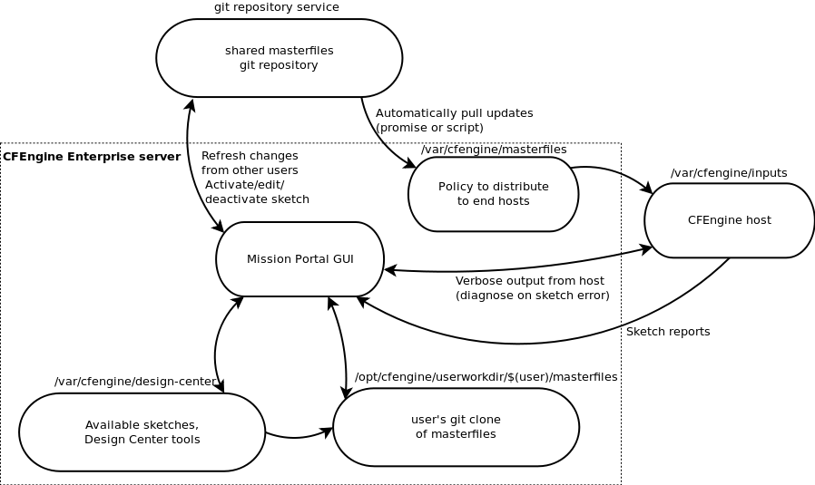
Git repository service
This service must offer git over ssh. It is the canonical place for masterfiles, and must be initialized with the CFEngine Enterprise masterfiles (version 3.6 and onwards). It can be hosted on an internal git server or services like github.
Mission Portal GUI
The main CFEngine Enterprise graphical interface. It includes the
Design Center App for using sketches and getting reports about them.
The Mission Portal administrator must configure its settings
with the Git version control repository you selected above. Users are only allowed to use
the Design Center App if they are members of the cf_vcs role (see
Controlling Access to the Design Center UI.
/var/cfengine/masterfiles
The distribution point for policies for CFEngine.
This is a shared directory that contains the policy for all hosts.
CFEngine policy inside this directory automatically
get pulled down by all CFEngine hosts. Sketches are added in the sketches subdirectory.
/var/cfengine/design-center
This is a stable version of the official Design Center
repository. It contains all the
sketches that are available to the Mission Portal Design Center App (UI), as
well as tools and APIs utilized internally by the app. Note in particular the
tools/cf-sketch/constdata.conf file that contains out-of-the-box validations
and other definitions. See the reference documentation for the sketch
structure for a complete
list of requirements necessary for a sketch to work well with the app.
/opt/cfengine/userworkdir/$(user)/masterfiles
Each user of the Mission Portal has his or her own working directory here. It contains a local clone from the git repository service, using the shared Mission Portal Git credentials that the administrator has set up for all users. The operations performed in the Design Center App will modify this directory, and it will be pushed to the Git repository to make changes to the CFEngine policy.
/opt/cfengine is chosen as the base directory rather than /var/cfengine
due to space utilization concerns in /var when many users check out their
local git clone. It should have enough free space to store the size of the
git masterfiles clone times the number of users in the cf_vcs role.
NOTE YOU SHOULD NOT CHECK LARGE FILES INTO GIT!!! IT'S NOT DESIGNED FOR IT AND GETTING RID OF THEM IS HARD BECAUSE OF GIT'S HISTORY!!!
The hosts and /var/cfengine/inputs
The hosts copy from /var/cfengine/masterfiles on the CFEngine server to
its local /var/cfengine/inputs every time CFEngine runs. The policy that hosts
copy includes the sketches that have been activated by app users. The
hosts run the policy, including the sketches, that apply to them. During
each run they generate local reports that are collected by the CFEngine
Enterprise Hub. Thus the app is updated with the sketch activation status.
If a sketch activation is not compliant (red in the app), the user is given the option to
invoke an agent run on a failing host from the app. This will capture the
verbose agent output for the user. This is only allowed if the Mission Portal
administrator has put the user in the cf_remoteagent role, and furthermore requires sudo permissions for the cfapache user.
Enterprise API
The CFEngine Enterprise API allows HTTP clients to interact with the CFEngine Enterprise Hub. Typically this is also the policy server.

The Enterprise API is a REST API, but a central part of interacting with the API uses SQL. With the simplicity of REST and the flexibility of SQL, users can craft custom reports about systems of arbitrary scale, mining a wealth of data residing on globally distributed CFEngine Database Servers.
See also the Enterprise API Examples and the Enterprise API Reference.
Best Practices
Version Control and Configuration Policy
CFEngine users version their policies. It's a reasonable, easy thing
to do: you just put /var/cfengine/masterfiles under version control
and... you're done?
What do you think? How do you version your own infrastructure?
Problem statement
It turns out everyone likes convenience and writing the versioning machinery is hard. So for CFEngine Enterprise 3.6 we set out to provide version control integration with Git out of the box, disabled by default. This allows users to use branches for separate hubs (which enables a policy release pipeline) and enables Design Center integration.
Release pipeline
A build and release pipeline is how software is typically delivered to production through testing stages. In the case of CFEngine, policies are the software. Users have at least two stages, development and production, but typically the sequence has more stages including various forms of testing/QA and pre-production.
Design Center
The CFEngine Design Center is a way to augment your policies (in a way that does not conflict or override your own policies) through a GUI, using modular testable policies called sketches. It's like a Perl CPAN for CFEngine but with a GUI and awesome sauce mixed in.
How to enable it
To enable masterfiles versioning, you have to plan a little bit. These are the steps:
Choose your repository
You have two options: use the default local Git repository which comes
with CFEngine Enterprise, or use a remote Git repository accessible
via the git or https protocol. The first option is good for
getting started quickly, but we strongly recommend the second option:
using a remote repository, populated with the contents of the 3.6.x
branch of our masterfiles repository at
https://github.com/cfengine/masterfiles.
Using the default local Git repository
The default repository is a local directory on the hub and set up by
the cfengine-hub package. It's the default in the Mission Portal
VCS integration panel and resides in /opt/cfengine/masterfiles.git.
PLEASE NOTE: you must use user "cfapache" to interact with this repository safely on the hub.
You do not have to do anything to set up this repository - it's already preconfigured and prepopulated out of the box. You just need to enable VCS deployments as described below.
To check out this default repository, run the following commands on
your hub (everything needs to be run as user cfapache for the
permissions to be set correctly. The first two commands setup some
basic information needed by git to manipulate the repository):
git config user.email "your@email.address"
git config user.name "Your Name"
su - cfapache
git clone /opt/cfengine/masterfiles.git
And then make all the changes in the checked-out masterfiles
repository.
Using a remote repository
To use a remote repository, you must enter its address, login credentials and the branch you want to use in the Mission Portal VCS integration panel. To access it, click on "Settings" in the top-left menu of the Mission Portal screen, and then select "Version control repository". This screen by default contains the settings for using the built-in local repository.


Make sure your current masterfiles are in the chosen repository
This is critical. When you start auto-deploying policy, you will
overwrite your current /var/cfengine/masterfiles. So take the
current contents thereof and make sure they are in the Git repository
you chose in the previous step.
For example, if you create a new repository in GitHub by following the
instructions from https://help.github.com/articles/create-a-repo, you
can add the contents of masterfiles to it with the following
commands (assuming you are already in your local repository checkout):
cp -r /var/cfengine/masterfiles/* .
git add *
git commit -m 'Initial masterfiles check in'
git push
Enable VCS deployments in the versioned update.cf
In the file update.cf in your versioned masterfiles, change
#"cfengine_internal_masterfiles_update" expression => "enterprise.!(cfengine_3_4|cfengine_3_5)";
"cfengine_internal_masterfiles_update" expression => "!any";
to
"cfengine_internal_masterfiles_update" expression => "enterprise.!(cfengine_3_4|cfengine_3_5)";
#"cfengine_internal_masterfiles_update" expression => "!any";
This is simply commenting out one line and uncommenting another.
Remember that you need to commit and push these changes to the
repository you chose in the previous step, so that they are picked up
when you deploy from the git repository. In your checked out
masterfiles git repository, these commands should normally do the
trick:
git add update.cf
git commit -m 'Enabled auto-policy updates'
git push
Now you need to do the first-time deployment, whereupon this new
update.cf and the rest of your versioned masterfiles will overwrite
/var/cfengine/masterfiles. We made that easy too, using standard
CFEngine tools. Exit the cfapache account and run the following
command as root on your hub:
cf-agent -Dcfengine_internal_masterfiles_update -f update.cf
Easy, right? You're done, from now on every time update.cf is run
(by default, every 5 minutes) it will check out the repository and
branch you configured in the Mission Portal VCS integration panel.
Please note all the work is done as user cfapache except the very
last step of writing into /var/cfengine/masterfiles.
How it works
The code is fairly simple and can even be modified if you have special
requirements (e.g. Subversion integration). But out of the box there
are three important components. All the scripts below are stored under
/var/cfengine/httpd/htdocs/api/dc-scripts/ in your CFEngine
Enterprise hub.
common.sh
The script common.sh is loaded by the deployment script and does two
things. First, it redirects all output to
/var/cfengine/outputs/dc-scripts.log. So if you have problems,
check there first.
Second, the script sources /opt/cfengine/dc-scripts/params.sh where
the essential parameters like repository address and branch live.
That file is written out by the Mission Portal VCS integration panel,
so it's the connection between the Mission Portal GUI and the
underlying scripts.
masterfiles-stage.sh
This script is called to deploy the masterfiles from VCS to
/var/cfengine/masterfiles. It's fairly complicated and does not
depend on CFEngine itself by design; for instance it uses rsync to
deploy the policies. You may want to review and even modify it, for
example choosing to reject deployments that are too different from the
current version (which could indicate a catastrophic failure or
misconfiguration).
This script also validates the policies using cf-promises -T. That
command looks in a directory and ensures that promises.cf in the
directory is valid. If it's not, an error will go in the log file and
the script exits.
NOTE this means that clients will never get invalid policies according to the hub, although a 3.5 or older client could still receive policies that are only valid in 3.6. So make sure you test with 3.5 or older if you anticipate that problem during migration, but in a homogeneous client population this is a wonderful guarantee.
pre-fetch.sh and post-update.sh
These scripts are run by the Mission Portal whenever the user configures sketches. They enable the Mission Portal to check out the policies, make changes to them, and then commit and push them back.
Design Center integration
The Design Center integration Just Works when you follow the procedure above to enable the VCS integration. You can then go into the Mission Portal, configure any sketch, and voila, in minutes that sketch will be activated across your infrastructure.
Manual policy changes
If you want to make manual changes to your policies, simply make those
changes in a checkout of your masterfiles repository, commit and push
the changes. The next time update.cf runs, your changes will be
checked out and in minutes distributed through your entire
infrastructure.
Benefits
To conclude, let's summmarize the benefits of versioning your masterfiles using the built-in facilities in CFEngine Enterprise 3.6
- easy to use compared to home-grown VCS integration
- supports Git out of the box and, with some work, can support others like Subversion
- tested, reliable, and built-in
- Design Center integration
- supports any repository and branch per hub
- your policies are validated before deployment
- integration happens through shell scripts and
update.cf, not C code or special policies
Scalability
When running CFEngine Enterprise in a large-scale IT environment with many thousands of hosts, certain issues arise that require different approaches compared with smaller installations.
With CFEngine 3.6, significant testing was performed to identify the issues surrounding scalability and to determine best practices in large-scale installations of CFEngine.
Moving PostgreSQL to Separate Hard Drive
Moving the PostgreSQL database to another physical hard drive from the other CFEngine components can improve the stability of large-scale installations, particularly when using a solid-state drive (SSD) for hosting the PostgreSQL database.
The data access involves a huge number of random IO operations, with small chunks of data. SSD may give the best performance because it is designed for these types of scenarios.
Important: The PostgreSQL data files are in /var/cfengine/state/pg/ by default. Before moving the mount point, please make sure that all CFEngine processes (including PostgreSQL) are stopped and the existing data files are copied to the new location.
Setting the splaytime
The splaytime tells CFEngine hosts the base interval over which they will communicate with the policy server, which they then use to "splay" or hash their own runtimes.
Thus when splaytime is set to 4, 1000 hosts will hash their run attempts evenly over 4 minutes, and each minute will see about 250 hosts make a run attempt. In effect, the hosts will attempt to communicate with the policy server and run their own policies in predictable "waves." This limits the number of concurrent connections and overall system load at any given moment.